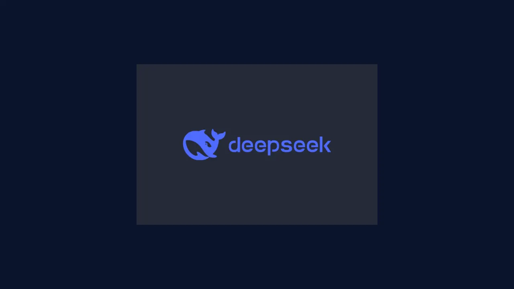
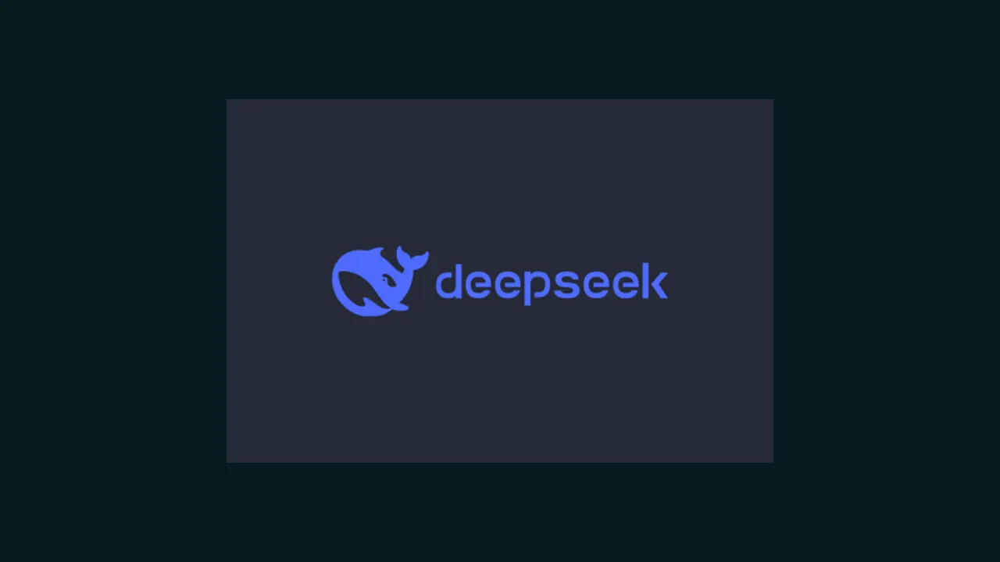

DeepSeek closes in on a $15B raise: CATL and Tencent lead as the 100B-yuan round doubles its target
- Who: DeepSeek, the Chinese AI lab best known for its open-weights reasoning models.
- What: wrapping up a funding round of about 100 billion yuan ($14.98B) from existing and new investors.
- Valuation: 500 billion yuan before new capital is injected, per earlier Reuters reporting.
- Lead backers: battery maker CATL and WeChat operator Tencent are among the biggest investors; new investors include Midea, Meituan, Geely and GigaDevice, plus Boyu Capital, CPE, Legend Capital and existing shareholder IDG Capital.
- Scale: 15+ investors total; the raise has doubled the original 50-billion-yuan target.
- Status: expected to complete in the coming days, though one source cautioned the details are not ironclad and could still change.
DeepSeek is wrapping up a funding round worth about 100 billion yuan — roughly $14.98 billion — Bloomberg first reported on Thursday, October 22, citing people familiar with the matter, with Reuters confirming the details the same day. The round would value the Chinese AI lab at 500 billion yuan before new capital is injected, and it has doubled its original 50-billion-yuan target as investor demand piled in.
That makes it one of the largest AI financings of 2026 — and it lands in a week when DeepSeek is simultaneously being pulled into US federal systems disputes. The round's size and speed underscore how aggressively Chinese state-backed and corporate capital is moving to keep DeepSeek in the race against the US frontier labs.
The money
The figures, reported by four people with knowledge of the matter, are striking: ~100 billion yuan ($14.98B) raised, at a 500-billion-yuan pre-money valuation, from more than 15 investors. Reuters cited a yuan rate of 6.6749 for the conversion.
The fundraising is expected to be complete in the coming days, but one source cautioned that the financial details and investor lineup are "not ironclad and could still change." The company will have doubled its original 50-billion-yuan fundraising target — a signal of just how much appetite exists for the lab.

Who's in
The investor list reads like a map of China's industrial establishment. Battery giant CATL and WeChat operator Tencent Holdings are among the biggest investors, according to two of the sources.
New investors in this round include home-appliance maker Midea, food-delivery giant Meituan, automaker Geely and semiconductor maker GigaDevice. Other participants include Boyu Capital, CPE and Legend Capital, as well as existing shareholder IDG Capital.
The mix — state-connected funds, automakers, chipmakers, consumer platforms — reflects a broad bet that DeepSeek is China's best shot at matching the US labs, and that the payoff is worth sharing across the industrial base.
What comes next
The raise points toward public markets. In September, Reuters reported that DeepSeek had hired CITIC Securities to prepare for a potential STAR Market initial public offering — the Shanghai board for high-tech companies.
Operationally, the lab is not standing still. Last month it released DeepSeek-V4.1-Flash, a model it says is built for greater capability, faster inference, higher throughput and scaling to larger models.
The money arrives alongside political turbulence: earlier this month, the US Department of Homeland Security ordered DeepSeek removed from federal civilian agency systems (see our coverage), putting the lab at the center of the US-China AI decoupling. The $15B war chest gives DeepSeek room to fund compute at a scale few labs can — even as Washington tries to push it out of American systems.

Frequently asked questions
How much is DeepSeek raising, and at what valuation?
DeepSeek is wrapping up a funding round of about 100 billion yuan ($14.98 billion) at a 500-billion-yuan valuation before new capital is injected, per Bloomberg and Reuters reporting on October 22. The round is expected to complete in the coming days, though sources caution the details could still change.
Who is investing in the round?
Battery maker CATL and Tencent Holdings are among the biggest investors. New investors include Midea, Meituan, Geely and GigaDevice, alongside Boyu Capital, CPE, Legend Capital and existing shareholder IDG Capital — more than 15 investors in total.
What does the raise signal for DeepSeek's future?
It doubles the original 50-billion-yuan target and points toward public markets: in September, Reuters reported DeepSeek hired CITIC Securities to prepare for a potential STAR Market IPO. The lab also released its DeepSeek-V4.1-Flash model last month, built for faster inference and higher throughput.